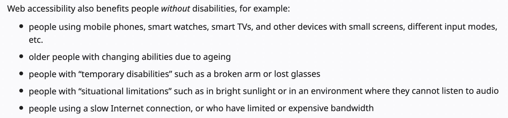
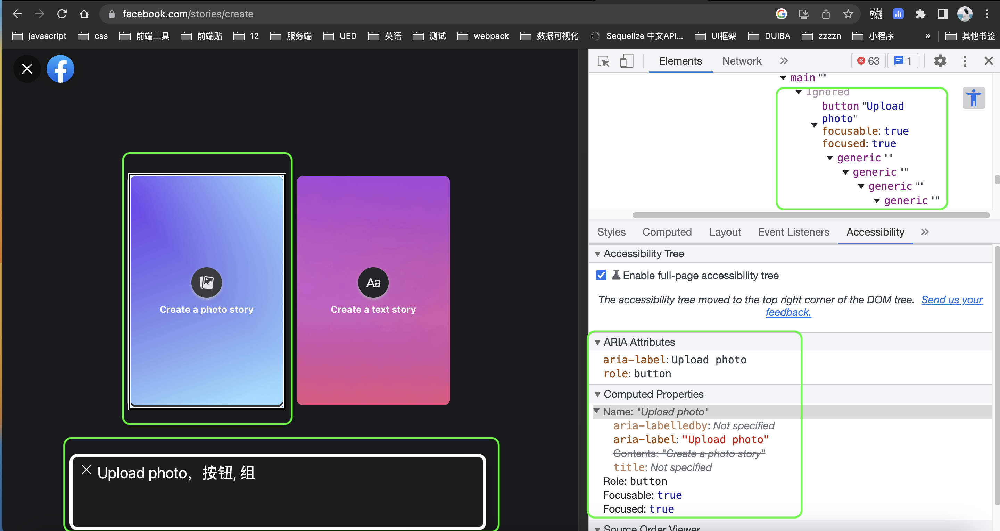

浅谈 WEB Accessibility
帮助视觉、听觉、身体、语音、认知、语言、学习和神经系统残疾的人群更方便的访问 Web 内容。
- 
原则、准则、标准
WCAG2.1
WAI_ARIA
为什么需要关注 WEB 可访问性？
深度老龄化
深度信息化
如何提高页面的可访问性？
- 对齐 WCAG 的标准 进行页面元件开发
- 利用 WAI-ARIA 构建健壮的 Accessibility Tree
- 善用 tabIndex 进行焦点控制
VoiceOver 识别页面元素
tabIndex
无障碍检测工具
- W3C 官网推荐无障碍检测工具
- FAE 2.0
参考资料
- https://www.w3.org/2021/05/29-older-users-and-accessibility/minutes.html
- http://www.gov.cn/zhengce/zhengceku/2021-04/13/content_5599225.htm
- https://www.w3.org/TR/wai-aria/
- https://www.w3.org/WAI/fundamentals/accessibility-intro/
- https://cn.vuejs.org/guide/best-practices/accessibility.html#resources/
- https://www.youtube.com/watch?v=dcm8fjBfro8